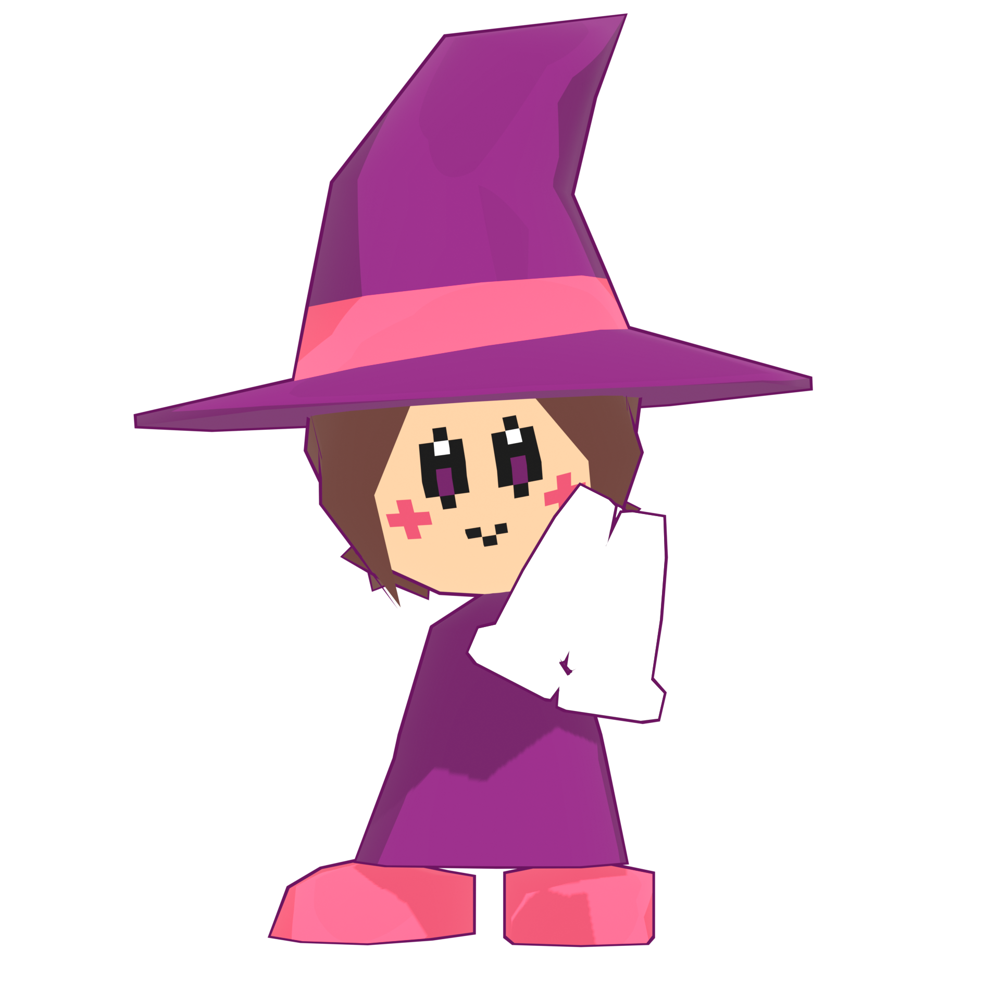
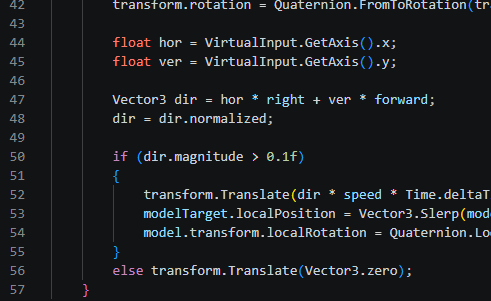

Somos una marca enfocada en construir identidades visuales para consolas de videojuegos.
Entendemos el juego como una experiencia que el jugador siente mágica en sus primeros intentos, y queremos transmitir este pensamiento en nuestro modo de trabajo, donde cada idea nace como una chispa.
Ayudar a las consolas más pequeñas a construir una identidad visual única que les ayude a crecer, enfocándonos en la experiencia de usuario que brindan sus interfaces y la personalidad que muestran en medios externos.
Llegar a ser un estandar de la industria, aún ayudando a los productos emergentes a hacerse un lugar en el mercado a la vez que colaboramos con las marcas más fuertes del nicho y sus nuevas propuestas.


este contenido se encuentra en desarrollo